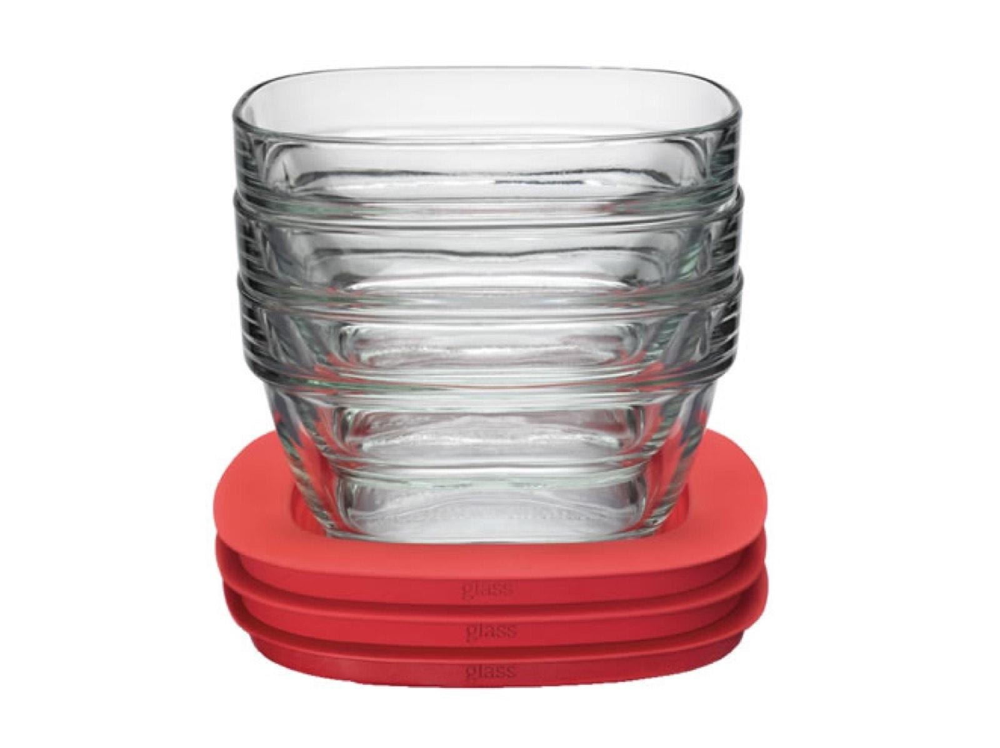

A — Reuse
Reusable dining systems
Durable containers circulate through distribution, convenient return stations, washing, and repeated use — replacing thousands of single-use clamshells.
We measure- Return rate
- Reuse cycles
- Washing needs
- Operating cost
- Disposables avoided